lorenz_partial_additive_splitmode_p30_obsnoise005_cayley_autodim_nd35__lc_sweepProject: Lorenz_INDpartial_NDsweep_cayley_autodim_D1_NormTrue__JacobianODE
Launched: 2026-05-04T04:30:19Z
Completed: 2026-05-04T08:15:29Z
Outcome: complete_clean
Git: latent-JacobianODE @ 885b651
Expected runs: 9
lorenz_partial_additive_splitmode_p30_obsnoise005_cayley_autodim_nd35__lc_sweepDescription
Lorenz partial-obs (single channel, n_delays=35), Cayley + PCA-99 autodim + split-mode loss + TF-coupled LR. obs_noise=0.05 on the data, NO obs_noise_scale at training time. 9-cell sweep over loop_closure_weight only. Single-stage, full 3-hour SLURM per cell.
Hypothesis
n_delays=35 produced the best Lyapunov exponent recovery in the Cayley chain scout (5-100 sweep). Hold n_delays fixed there and sweep LC alone to find the best loop-closure weight at this embedding dimension. Drop obs_noise_scale because the v2 grid showed all obs_noise_scale>=0.01 cells diverge to NaN at this recipe; obs_noise_scale=0 isolates the LC effect.
Success criteria
Swept axes (1): training.lightning.loop_closure_weight
Chosen run (by best_traj_loss): g1esargp — traj_loss=0.00661, MASE=0.8004, R²=0.9826, LC loss=5.555, epoch=108.0
Swept-axis values at chosen run: training.lightning.loop_closure_weight=1.0e-06
Runs analyzed: 9 (expected 9)
| run_idx | run_id | training.lightning.loop_closure_weight |
best_traj_loss | best_MASE | R² | LC loss | epoch |
|---|---|---|---|---|---|---|---|
| 1 | g1esargp |
1.0e-06 | 0.00661 | 0.8004 | 0.9826 | 5.555 | 108.0 |
| 2 | n1mm6b2s |
1.0e-05 | 0.00683 | 0.8012 | 0.9820 | 1.678 | 108.0 |
| 0 | cdk7c6i1 |
0 | 0.00683 | 0.8019 | 0.9820 | 12.573 | 100.0 |
| 3 | 10t4rgnb |
1.0e-04 | 0.00717 | 0.8096 | 0.9811 | 0.304 | 105.0 |
| 4 | obvp7et3 |
0.001 | 0.00727 | 0.8160 | 0.9809 | 0.051 | 108.0 |
| 5 | 4fppsvdw |
0.01 | 0.00829 | 0.8523 | 0.9781 | 0.006 | 109.0 |
| 7 | hd8qnfnx |
1 | 0.01130 | 0.9657 | 0.9702 | 0.000 | 112.0 |
| 8 | aewh8n3d |
10 | 0.01370 | 1.0406 | 0.9639 | 0.000 | 105.0 |
| 6 | 44gh0sy8 |
0.1 | 0.01831 | 1.0912 | 0.9516 | 0.000 | 39.0 |
| Criterion | Verdict | Note |
|---|---|---|
| All 9 cells train without NaN | Unknown | |
| Per-cell autodim n_target_dims logged | Unknown | |
| Best run's leading Lyapunov exponent within ~30% of empirical | Unknown |
Automated verdicts use simple numeric-threshold parsing and may mis-classify qualitative criteria. The Discussion section below takes precedence.
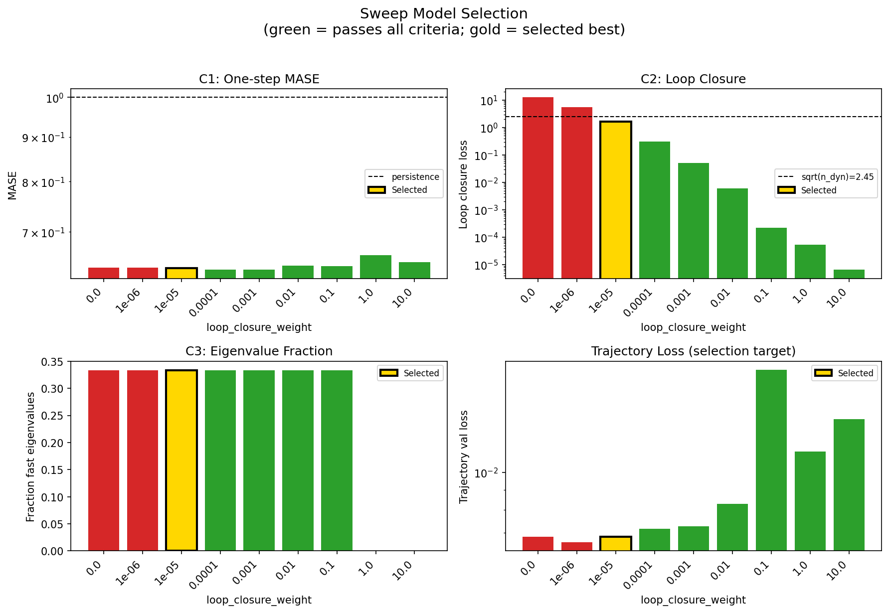
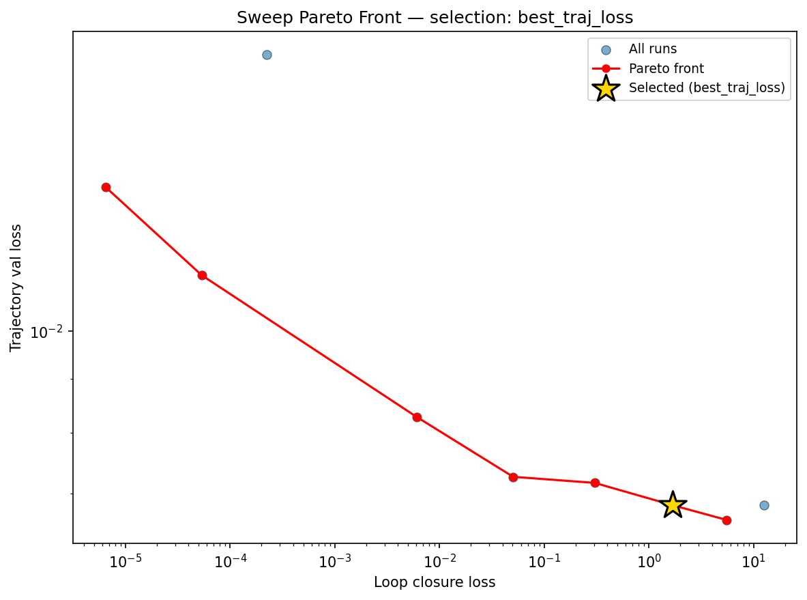
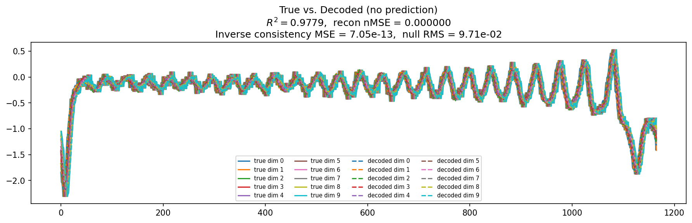
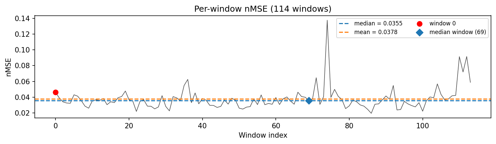
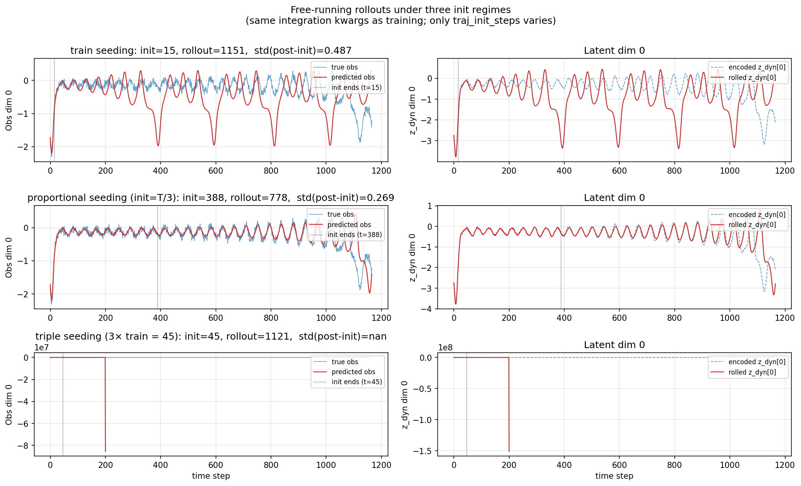
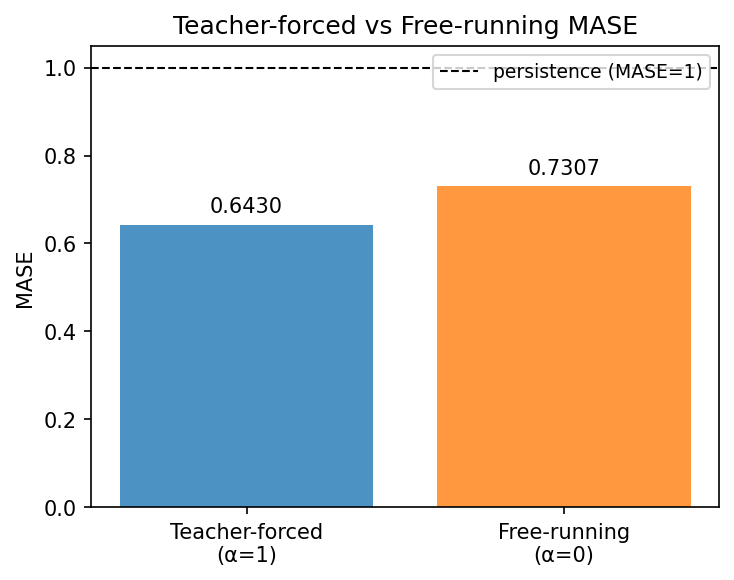
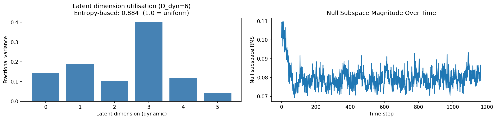
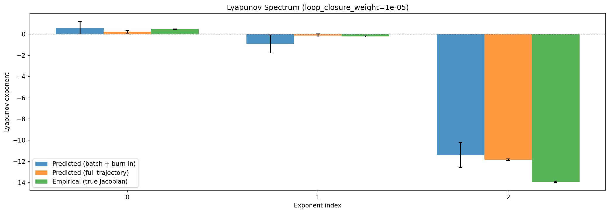
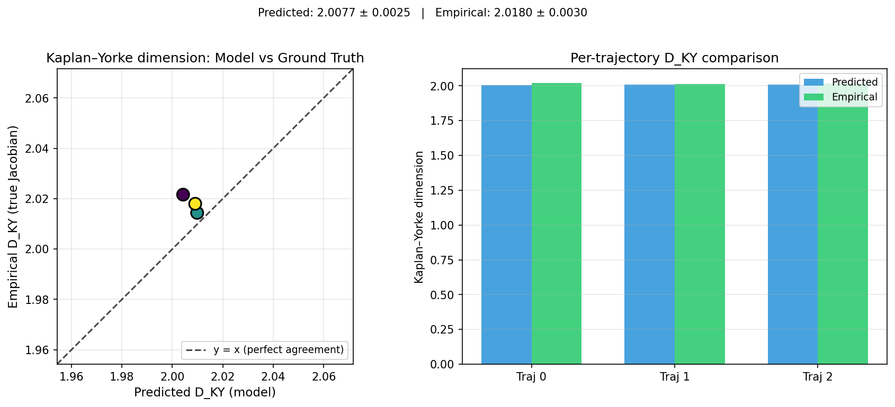
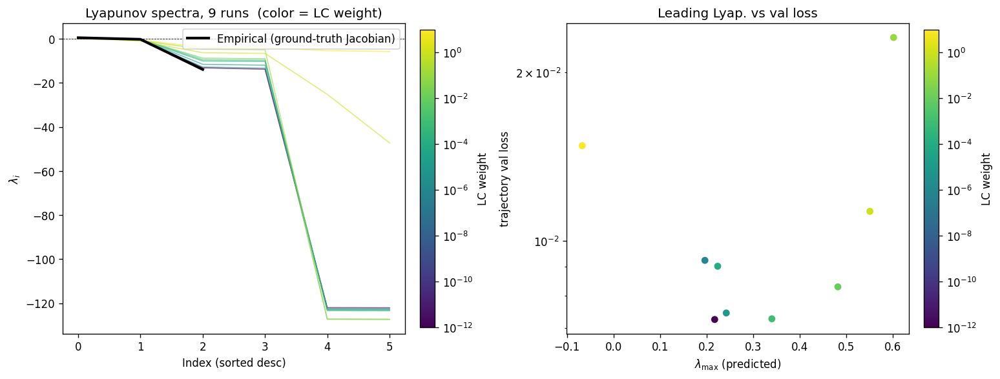
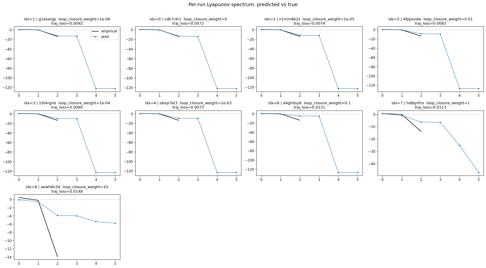
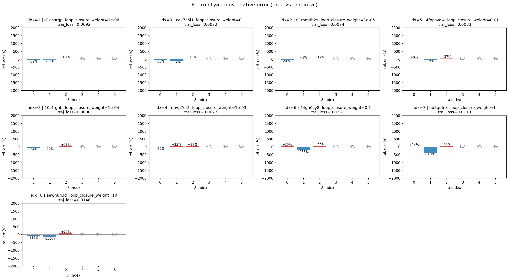
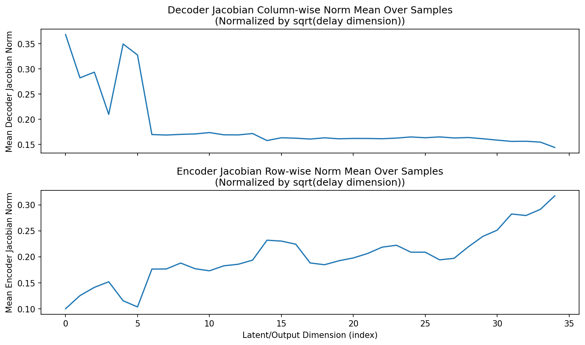
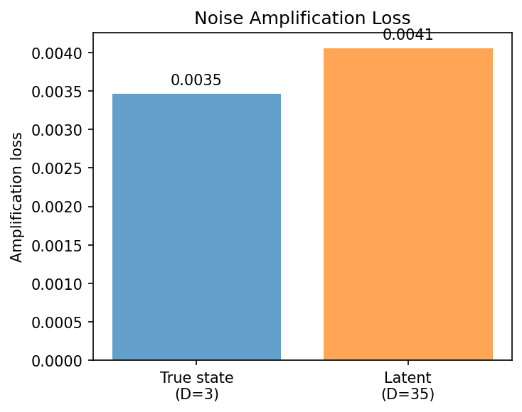
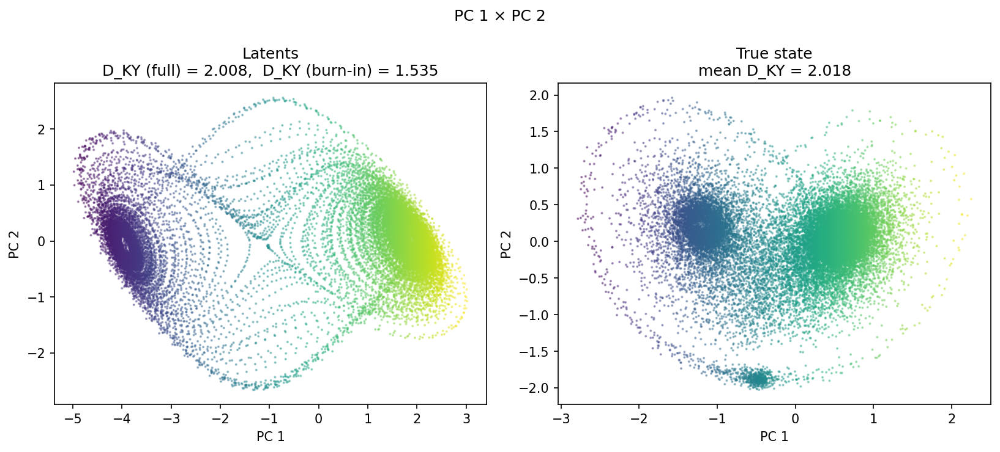
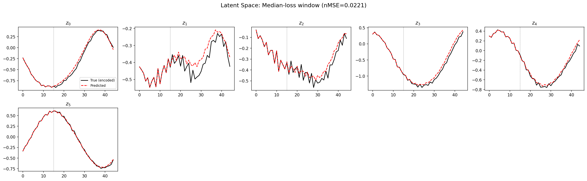
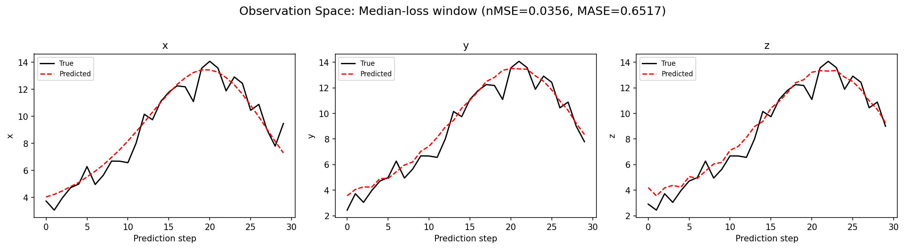
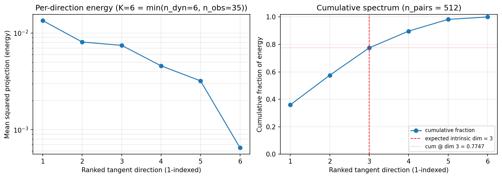
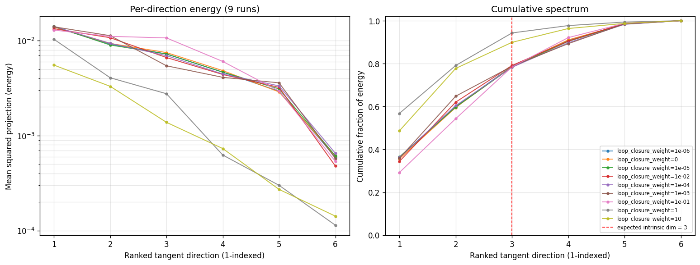
(to be written)
run_analytics stdoutrun_analyticsNo run_id provided — selecting best run from group 'lorenz_partial_additive_splitmode_p30_obsnoise005_cayley_autodim_nd35__lc_sweep' ...
Found 9 total runs in JacobianODE/Lorenz_INDpartial_NDsweep_cayley_autodim_D1_NormTrue__JacobianODE (group=lorenz_partial_additive_splitmode_p30_obsnoise005_cayley_autodim_nd35__lc_sweep)
All runs (state, loop_closure_weight, tangent_entropy_weight, kl_dyn_weight):
g1esargp: state=finished, lc=1e-06, te=0.0, kl_dyn=0.0
cdk7c6i1: state=finished, lc=0.0, te=0.0, kl_dyn=0.0
n1mm6b2s: state=finished, lc=1e-05, te=0.0, kl_dyn=0.0
4fppsvdw: state=finished, lc=0.01, te=0.0, kl_dyn=0.0
10t4rgnb: state=finished, lc=0.0001, te=0.0, kl_dyn=0.0
obvp7et3: state=finished, lc=0.001, te=0.0, kl_dyn=0.0
44gh0sy8: state=finished, lc=0.1, te=0.0, kl_dyn=0.0
hd8qnfnx: state=finished, lc=1.0, te=0.0, kl_dyn=0.0
aewh8n3d: state=finished, lc=10.0, te=0.0, kl_dyn=0.0
slurm_timeout_min not found in any run config — falling back to 180 min
Including g1esargp (lc=1e-06): use_all_runs=True (state=finished)
Including cdk7c6i1 (lc=0.0): use_all_runs=True (state=finished)
Including n1mm6b2s (lc=1e-05): use_all_runs=True (state=finished)
Including 4fppsvdw (lc=0.01): use_all_runs=True (state=finished)
Including 10t4rgnb (lc=0.0001): use_all_runs=True (state=finished)
Including obvp7et3 (lc=0.001): use_all_runs=True (state=finished)
Including 44gh0sy8 (lc=0.1): use_all_runs=True (state=finished)
Including hd8qnfnx (lc=1.0): use_all_runs=True (state=finished)
Including aewh8n3d (lc=10.0): use_all_runs=True (state=finished)
Found 9 effectively-done sweep runs:
loop_closure_weight=0.0, tangent_entropy_weight=0.0, kl_dyn_weight=0.0 -> run_id=cdk7c6i1
loop_closure_weight=1e-06, tangent_entropy_weight=0.0, kl_dyn_weight=0.0 -> run_id=g1esargp
loop_closure_weight=1e-05, tangent_entropy_weight=0.0, kl_dyn_weight=0.0 -> run_id=n1mm6b2s
loop_closure_weight=0.0001, tangent_entropy_weight=0.0, kl_dyn_weight=0.0 -> run_id=10t4rgnb
loop_closure_weight=0.001, tangent_entropy_weight=0.0, kl_dyn_weight=0.0 -> run_id=obvp7et3
loop_closure_weight=0.01, tangent_entropy_weight=0.0, kl_dyn_weight=0.0 -> run_id=4fppsvdw
loop_closure_weight=0.1, tangent_entropy_weight=0.0, kl_dyn_weight=0.0 -> run_id=44gh0sy8
loop_closure_weight=1.0, tangent_entropy_weight=0.0, kl_dyn_weight=0.0 -> run_id=hd8qnfnx
loop_closure_weight=10.0, tangent_entropy_weight=0.0, kl_dyn_weight=0.0 -> run_id=aewh8n3d
n_dims=35, n_latent=35, n_dyn=6, dt=0.0150
run=cdk7c6i1: DiagnosticMetrics(one_step_mase=0.6368582844734192, loop_closure_loss=12.573192596435547, fast_eigenvalue_fraction=0.3333333432674408, trajectory_val_loss=0.00682832719758153) (from W&B history)
run=g1esargp: DiagnosticMetrics(one_step_mase=0.6364641189575195, loop_closure_loss=5.555117130279541, fast_eigenvalue_fraction=0.3333333432674408, trajectory_val_loss=0.006609244272112846) (from W&B history)
run=n1mm6b2s: DiagnosticMetrics(one_step_mase=0.6357985734939575, loop_closure_loss=1.6779987812042236, fast_eigenvalue_fraction=0.3333333432674408, trajectory_val_loss=0.006827888544648886) (from W&B history)
run=10t4rgnb: DiagnosticMetrics(one_step_mase=0.6336358785629272, loop_closure_loss=0.3040429651737213, fast_eigenvalue_fraction=0.3333333432674408, trajectory_val_loss=0.007168845739215612) (from W&B history)
run=obvp7et3: DiagnosticMetrics(one_step_mase=0.6331437230110168, loop_closure_loss=0.050565920770168304, fast_eigenvalue_fraction=0.3333333432674408, trajectory_val_loss=0.007265176624059677) (from W&B history)
run=4fppsvdw: DiagnosticMetrics(one_step_mase=0.6404325366020203, loop_closure_loss=0.006037137005478144, fast_eigenvalue_fraction=0.3333333432674408, trajectory_val_loss=0.008285491727292538) (from W&B history)
run=44gh0sy8: DiagnosticMetrics(one_step_mase=0.6396046280860901, loop_closure_loss=0.00022548627748619765, fast_eigenvalue_fraction=0.3333333432674408, trajectory_val_loss=0.018310919404029846) (from W&B history)
run=hd8qnfnx: DiagnosticMetrics(one_step_mase=0.6584667563438416, loop_closure_loss=5.3656360250897706e-05, fast_eigenvalue_fraction=0.0, trajectory_val_loss=0.011297713965177536) (from W&B history)
run=aewh8n3d: DiagnosticMetrics(one_step_mase=0.6463721394538879, loop_closure_loss=6.50302217763965e-06, fast_eigenvalue_fraction=0.0, trajectory_val_loss=0.01369971502572298) (from W&B history)
Ranking method: best_traj_loss
Best run ID: n1mm6b2s
Best loop_closure_weight: 1e-05
Best tangent_entropy_weight: 0.0
Best kl_dyn_weight: 0.0
Best traj loss: 0.006828
Criteria applied: ['C1', 'C2', 'C3']
Surviving: 7 / 9
Auto-selected run_id: n1mm6b2s
======================================================================
PARETO FRONTIER RUNS (7 runs)
======================================================================
Run ID LC Loss Traj Val Loss
------------ -------------- --------------
aewh8n3d 0.000007 0.013700
hd8qnfnx 0.000054 0.011298
4fppsvdw 0.006037 0.008285
obvp7et3 0.050566 0.007265
10t4rgnb 0.304043 0.007169
n1mm6b2s 1.677999 0.006828 <-- selected
g1esargp 5.555117 0.006609
======================================================================
RANKING METHOD COMPARISON (over 7 survivors)
======================================================================
Method Run ID LC Loss Traj Val Loss
---------------------- ------------ -------------- --------------
best_traj_loss n1mm6b2s 1.677999 0.006828 <-- active
pareto_knee obvp7et3 0.050566 0.007265
geo_rank aewh8n3d 0.000007 0.013700
minimax_rank 4fppsvdw 0.006037 0.008285
geo_log_score n1mm6b2s 1.677999 0.006828
minimax_log_score hd8qnfnx 0.000054 0.011298
======================================================================
Loading run n1mm6b2s from JacobianODE/Lorenz_INDpartial_NDsweep_cayley_autodim_D1_NormTrue__JacobianODE ...
Loading checkpoint epoch=108-step=21800.ckpt...
Train dataset shape: torch.Size([24662, 45, 35])
Validation dataset shape: torch.Size([7847, 45, 35])
Test dataset shape: torch.Size([3363, 45, 35])
Train trajectories dataset shape: torch.Size([22, 1166, 35])
Validation trajectories dataset shape: torch.Size([7, 1166, 35])
Test trajectories dataset shape: torch.Size([3, 1166, 35])
Loading checkpoint epoch=108-step=21800.ckpt...
Computing reconstruction ...
Computing MASE ...
Teacher-forced MASE: 0.6430
Free-running MASE: 0.7307
Computing latent utilization ...
Entropy-based utilization: 0.884
Null subspace mean RMS: 7.993452e-02
Computing Lyapunov exponents ...
Computing full-trajectory Lyapunov (3 test trajs, T=1166) ...
Predicted Lyapunov exponents (batch+burn-in, 128 windowed trajs):
λ_1 = +0.5891 ± 0.5960
λ_2 = -0.9387 ± 0.8505
λ_3 = -11.4018 ± 1.1885
λ_4 = -11.8020 ± 0.8704
λ_5 = -122.4269 ± 1.0928
λ_6 = -122.6129 ± 1.0866
Predicted Lyapunov exponents (full-length, 3 test trajs):
λ_1 = +0.2117 ± 0.1333
λ_2 = -0.1205 ± 0.1419
λ_3 = -11.8430 ± 0.0912
λ_4 = -12.1082 ± 0.0724
λ_5 = -123.0491 ± 0.0184
λ_6 = -123.1252 ± 0.0132
Empirical Lyapunov exponents (mean ± std, all trajectories):
λ_1 = +0.4677 ± 0.0259
λ_2 = -0.2173 ± 0.0549
λ_3 = -13.9174 ± 0.0513
Mean KY dim (predicted): 2.008 ± 0.002
Mean KY dim (empirical): 2.018 ± 0.003
Mean KY dim (burn-in): 1.535 ± 0.425
Computing prediction windows ...
Windows: 114 — nMSE min=0.0194, median=0.0355, mean=0.0378, max=0.1378
Computing long-trajectory free-running rollouts ...
Computing encoder/decoder Jacobians ...
encoder_jacobian: (128, 35, 35)
decoder_jacobian: (128, 35, 35)
Computing amplification loss ...
Amplification loss — True state: 0.003469
Amplification loss — Latent: 0.004059
Computing tangent space spectrum ...